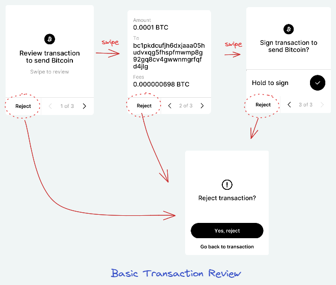
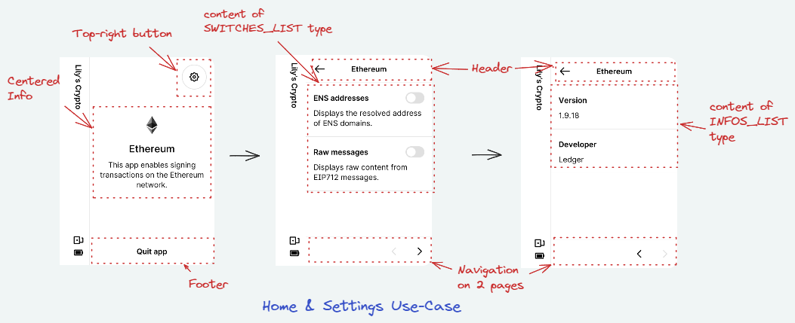
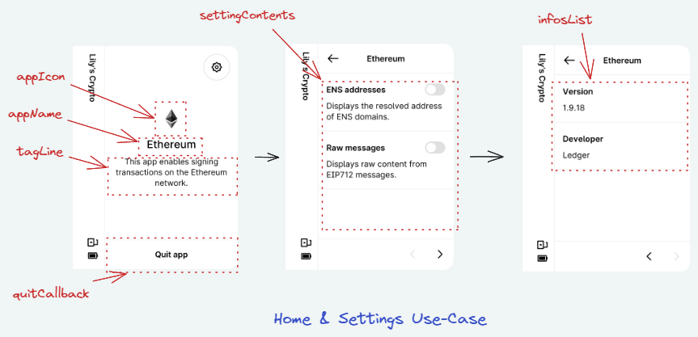
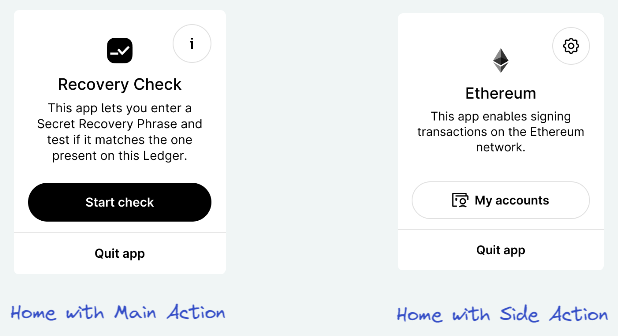
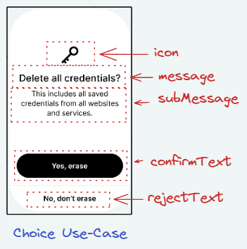
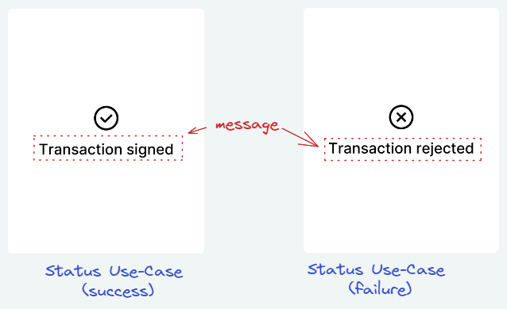
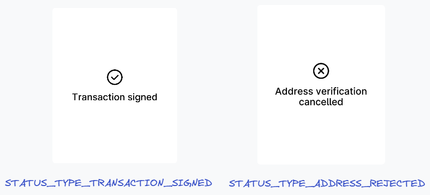
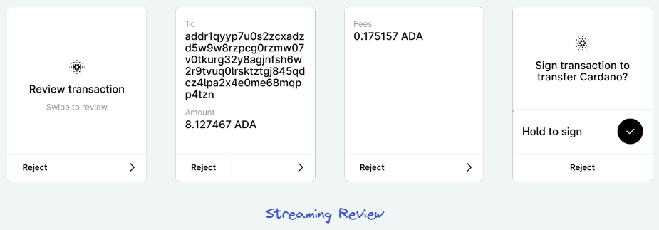

Introduction
This chapter describes the Application Use-cases API of Advanced BOLOS Graphic Library.
This layer offers a simplified view of some typical use-cases of display in an Application running on Stax. For example, a use-case can be:
- Reviewing a transaction/message
- Reviewing details on a given data of a transaction/message
- Displaying pages of settings
A full description of each predefined use-case can be found in this document
Concepts
This layer uses the high-level API described in Predefined pages API, but offers to developer more than a single page.
The goal is to simplify the usage of NBGL, but also to offer a better homogeneity across applications, by pushing developers to use common API for common use-cases.
So that not only the look of the pages but also their transitions look the same. Which should be a real help for end-users, getting more and more familiar with the user experience of applications.
Example 1: transaction review

In this example, a transaction review consists in 3 successive pages, and can be seen as a use-case
Example 2: home & settings pages

In this other example, displaying home page, then the settings and info consists in 3 pages, and can be seen as another use-case.
Use Cases
A few APIs are available to draw typical Use-Cases, such as:
- for Home Screen & Settings:
- nbgl_useCaseHomeAndSettings() to draw the home page and settings/info pages (see Home & Settings screen Use Case)
- for Individual pages:
- nbgl_useCaseConfirm() to draw a typical confirmation page, for example when rejecting a transaction (see Confirmation Use Case)
- nbgl_useCaseChoice() to draw a typical dual choice page (see Choice Use Case)
- nbgl_useCaseStatus() to draw a transient status page, without control, for example when a transaction is successfully signed (see Status Use Case)
- nbgl_useCaseSpinner() to draw an infinite spinner page (see Spinner Use Case)
- for most used reviews:
- nbgl_useCaseReview() to draw the pages of a regular coin transaction review, when all info are available from the beginning (see Review Use Case)
- nbgl_useCaseReviewLight() to draw the pages of a transaction review with a simple button confirmation, when all info are available from the beginning (see Light review Use Case)
- nbgl_useCaseReviewStreamingStart() to draw the pages of a regular coin transaction review, when all info are not available from the beginning (see Streaming review Use Case)
- for address verification:
- nbgl_useCaseAddressReview() to draw an address confirmation page, with a possibility to see it as QR Code and some extra tag/value pairs (see Address Review Use Case)
- for keypad:
- nbgl_useCaseKeypadPIN() to draw a default keypad implementation with hidden digits (see Keypad Use Case)
- nbgl_useCaseKeypadDigits() to draw a default keypad implementation, showing digits (see Keypad Use Case)
- for generic navigable content:
- nbgl_useCaseNavigableContent() to draw a level of generic content navigable pages
Some APIs have also been kept for backward compatibility, and for some rare cases:
- for most used reviews:
- nbgl_useCaseReviewStart() to draw the cover page of a review (initial page, without data)
- nbgl_useCaseStaticReview() to draw the data pages of a regular review, when all info are available from the beginning (all pages but the cover one)
- nbgl_useCaseRegularReview() to draw the data pages of a regular review (all pages but the cover one)
Home & Settings screen Use Case

Ledger would like all application to have the same layout for home screen and settings/info, so the nbgl_useCaseHomeAndSettings() function enables to create such a set of page, the configurable parameters being:
- the application name (appName)
- the application icon (appIcon)
- the tagline, a text under app name (if NULL, it will be "This app enables signing transactions on the <appName> network.")
- the callback when touching quit application button
Home & Settings screen with action button Use Case

For some rare applications, one may need an action button in the Home screen, to perform either:
- The main action of the Application
- Or an side-action, as to display an address
The action argument of nbgl_useCaseHomeAndSettings() can be used for that. This structure (nbgl_homeAction_t) enables to specify:
- A text & an icon for the button
- A function to be called when the button is touched
- The type of button (either STRONG_HOME_ACTION for main action, in black, or SOFT_HOME_ACTION for side action, in white)
Confirmation Use Case

A confirmation use-case consists in a single modal page containing a fixed icon, a configurable message, a black button and a footer to make the choice, with configuration texts. The nbgl_useCaseConfirm() function enables to create such a page.
The callback argument is called when the button is touched.
When the footer is touched, this modal screen is simply dismissed, revealing the previous page on background.
Here is the code to display the example picture (and a status page for confirmation)
Choice Use Case

A choice use-case consists in a single page containing a fixed icon, a configurable icon, a configurable message, a black button and a footer to make the choice, with configuration texts. The nbgl_useCaseChoice() function enables to create such a page.
The callback argument is called when the button or the footer is touched. Its argument is a boolean which is true when button is touched, false when footer is touched.
Here is the code to display the example picture
Status Use Case

A status is a transient page, without control, to display during a short time, for example when a transaction is successfully signed. The nbgl_useCaseStatus() function enables to create such a page, with the following arguments:
- a message string to set in middle of page
- a boolean to indicate if true, that the message is drawn in a Ledger style (with corners)
- a quit callback, called when quit timer times out (or the page is "tapped")
If it's a success status, a "success" tune will be automatically played.
Pre-defined status Use Case

Similar as Status Use Case, this is used to display transient page, without control, during a short time, for example when a transaction is successfully signed. The nbgl_useCaseReviewStatus() function enables to create such a page, with the following arguments:
- a type of status (with predefined message)
- a quit callback, called when quit timer times out (or the page is "tapped")
If it's a success status, a "success" tune will be automatically played.
Review Use Case
In most cases, the developer may know all tag/value pairs of a transaction when it is submitted.
In this case, what we call a "static" review can be used. The number of pages is computed automatically and pages can be navigated forward and backward.
In case of a tag/value pair too long to be fully displayed, the "more" button will be automatically drawn and its handling automatically performed by NBGL by building a detailed modal view.
When the user taps on "Reject" in any page, a confirmation page is automatically drawned to let user confirm that he rejects the transaction. In this case, the given callback is called and it's up to app's developer to call nbgl_useCaseReviewStatus(), as in case of long-press.
The API to initiate the display of the series of pages is nbgl_useCaseReview(), providing:
- the type of operation to review (transaction, message or generic operation)
- the list of tag/value pairs (or a callback to get them one by one)
- the texts/icon to use in presentation page and in last page
- a callback called when the long press button on last page or reject confirmation is used. The callback's param is true for confirmation, false for rejection.
Here is the code to display something similar to example picture:
Here is another version of the example code, using a callback mechanism to get tag/value pairs:
Light review Use Case
In some cases, the developer may want to display a review but with a less intense confirmation than a long-press button. A simple button is used in this case.
The API to initiate the display of the series of pages is nbgl_useCaseReviewLight(), providing:
- the list of tag/value pairs (or a callback to get them one by one)
- the texts/icon to use in presentation page and in last page
- a callback called when the long press button on last page or reject confirmation is used. The callback's param is true for confirmation, false for rejection.
Streaming review Use Case

In some cases, the application cannot know all tag/value pairs of a transaction when the review is started.
In this case, what we call a "streaming" review can be used. The pages to display for each "stream are computed automatically and pages can be navigated forward and backward (only within a "stream" for backward). In case of a tag/value pair too long to be fully displayed, the "more" button will be automatically drawn and its handling automatically performed by NBGL by building a detailed modal view. When the user taps on "Reject" in any page, a confirmation page is automatically drawned to let user confirm that he rejects the transaction. In this case, the given callback is called and it's up to app's developer to call @ref nbgl_useCaseReviewStatus(), as in case of long-press. The API to initiate the display of the series of pages is @ref nbgl_useCaseReviewStreamingStart(), providing: - the type of operation to review (transaction, message or generic operation) - the texts/icon to use in presentation page - a callback with one boolean parameter. - If this parameter is <em>false</em>, it means that the transaction is rejected. - If this parameter is <em>true</em>, it means that NBGL is waiting for new data, sent with @ref nbgl_useCaseReviewStreamingContinue() or @ref nbgl_useCaseReviewStreamingContinueExt() As long as there are new tag/value pairs to send, the API to call is either @ref nbgl_useCaseReviewStreamingContinueExt() (if skip is possible) or @ref nbgl_useCaseReviewStreamingContinue(), providing: - the list of tag/value pairs (or a callback to get them one by one) - a callback with one boolean parameter. - If this parameter is <em>false</em>, it means that the transaction is rejected. - If this parameter is <em>true</em>, it means that NBGL is waiting for new data, to be sent with @ref nbgl_useCaseReviewStreamingContinue() or @ref nbgl_useCaseReviewStreamingContinueExt() When there is no more data to senf, the API to call is either @ref nbgl_useCaseReviewStreamingFinish(), providing: - the title to use for last page (with long-press button) - a callback called when the long press button on last page or reject confirmation is used. The callback's param is <em>true</em> for confirmation, <em>false</em> for rejection. Here is the code to display something similar to example picture: @code // called when long press button on last page is long-touched or when reject footer is touched static void onReviewResult(bool confirm) { // display a status page and go back to main if (confirm) { nbgl_useCaseReviewStatus(STATUS_TYPE_TRANSACTION_SIGNED, appMain); } else { nbgl_useCaseReviewStatus(STATUS_TYPE_TRANSACTION_REJECTED, appMain); } } static void onTransactionContinue(bool askMore) { if (askMore) { nbgl_contentTagValueList_t pairsToSend; // try to get more data if (moreDataToSend(&pairsToSend)) { nbgl_useCaseReviewStreamingContinue(&pairsToSend, onTransactionContinue); } else { // all data sent, so finish nbgl_useCaseReviewStreamingFinish("Sign transaction to transfer Cardano?", // title on last page onReviewResult); // callback to handle reject/accept } } else { onReviewResult(false); } } void staticReview(void) { // initiate the streaming review nbgl_useCaseReviewStreamingStart(TYPE_TRANSACTION, &C_ic_asset_cardano_64, // icon on first and last page "Review transaction", // title of the first page NULL, // sub-title of the first page onTransactionContinue); // callback to reject or ask more data } @endcode @subsection use_case_addr_review Address Review Use Case @image{inline} html UseCase-AddressReview.png "caption" height=500 When an address needs to be confirmed, it can be displayed in a Address Review Use Case. After a title page, a second page is displayed with the raw address (as text). An extra button under the raw address enables to open a modal page to see the address as a QR code. Moreover, if extra information need to be displayed, for example a derivation path, it is provided in a second page, also containing a black button/Footer pair to choose to confirm or reject the address. The @ref nbgl_useCaseAddressReview() function enables to create such a set of pages, with the following parameters: - the address to confirm (NULL terminated string) - a callback called when button or footer is touched (if true, confirm, if false reject) - the list of extra tag/value pairs Here is the code to display something similar to example picture: @code // 2 pairs of tag/value to display in second page static nbgl_layoutTagValue_t pairs[2]; static const nbgl_contentTagValueList_t pairList = { .nbMaxLinesForValue = 0, .nbPairs = 2, .pairs = (nbgl_layoutTagValue_t*)pairs }; // called when either confirm button or reject token is called static void displayAddressCallback(bool confirm) { if (confirm) { nbgl_useCaseStatus("ADDRESS\nVERIFIED",true,app_fullEthereum); } else { nbgl_useCaseStatus("Address rejected",false,app_fullEthereum); } } void app_ethereumVerifyAddress(void) { nbgl_useCaseAddressReview("bc1pkdcufjh6dxjaaa05hudvxqg5fhspfmwmp8g92gq8cv4gwwnmgrfqfd4jlg", &pairList myAppIcon, "Verify MyCoin\naddress", NULL,"Cancel", appMain); } @endcode @subsection use_case_spinner Spinner Use Case @image{inline} html UseCase-Spinner.png "caption" height=300 When an address needs to be confirmed, it can be displayed in a Address Confirmation Use Case, at first as simple page with the raw address (as text) and a black button/Footer pair to choose to confirm or reject the address. An extra button under the raw address enables to open a modal page to see the address as a QR code. The @ref nbgl_useCaseSpinner() function enables to create such a page, with the following parameters: @subsection use_case_keypad Keypad Use Case @image{inline} html UseCase-Keypad.png "caption" height=350 We have here 2 different variants, allowing to show or hide the entered digits. When a pincode is requested, a default keypad can be displayed, with hidden digits. As shown on the image above, it consists of: - a navigation bar at the top - a title area, specifying the type of pin code or operation requested - a hidden Digits area (the max nb of supported digits is 12) - the keypad at the bottom The @ref nbgl_useCaseKeypadPIN() function enables to create such page, with the following parameters: - the title - min and max pin code lengths - a token for the navigation callback (if not provided, no navigation bar will appear) - a boolean to request a shuffled keypad - a tune value - callbacks for navigation and pin validation The other variant, where digits don't need to be hidden is @ref nbgl_useCaseKeypadDigits(); it takes the same parameters. @note The \em backspace and \em validate buttons will be shown or hidden automatically. Here is the code to display something similar to example picture: @code static void validate_pin(const uint8_t *pinentry, uint8_t length) { // Code to validate the entered pin code } static void pinentry_cb(int token, uint8_t index) { UNUSED(index); // Callback for the key navigation (back key mainly) if (token == TOKEN_PIN_ENTRY_BACK) { ui_init(); } } void ui_menu_pinentry_display(unsigned int value) { // Draw the keypad nbgl_useCaseKeypadPIN("Enter User PIN", 6, 12, TOKEN_PIN_ENTRY_BACK, false, TUNE_TAP_CASUAL, validate_pin, pinentry_cb); }
Refreshing screen
After having drawn graphic objects in framebuffer, all functions of this API automatically refresh the screen. So no need to call nbgl_refresh().